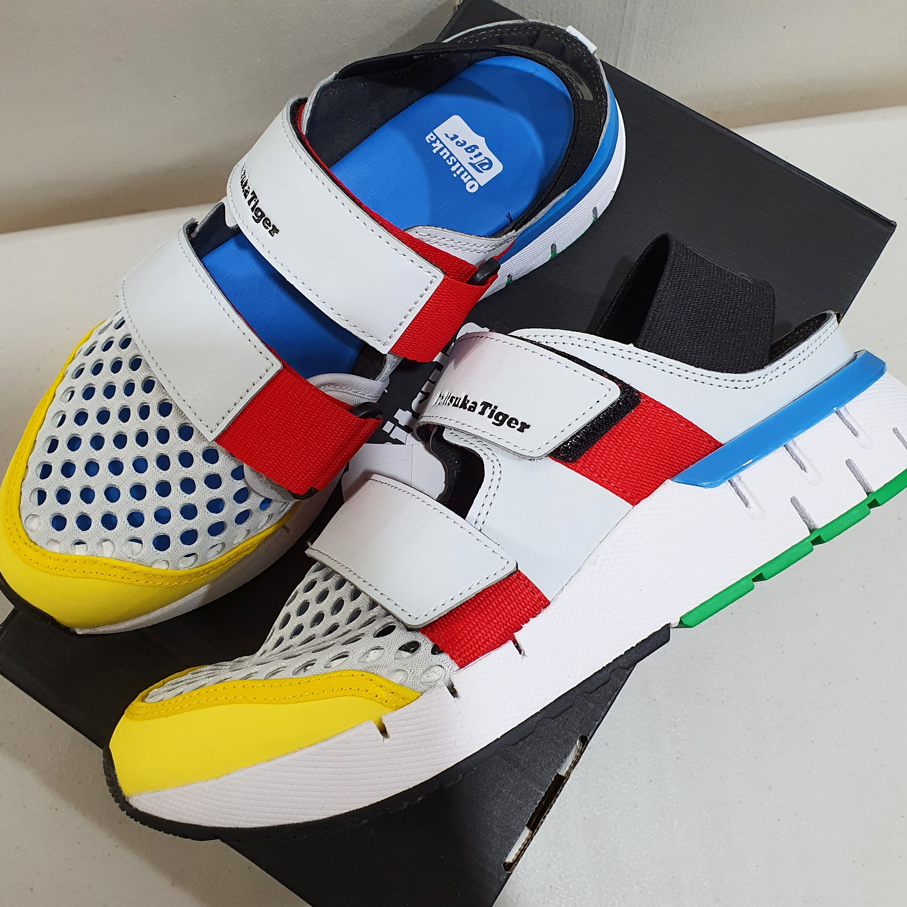

오니츠카타이거 레빌락샌들
한눈에 반해서 구매했는데 조금만 걸어도 왼쪽발등이 너무 아파서 신을수가 없었음;
평소같음 아;; 신발 잘못샀네 - 하고 포기했을텐데 디자인이 너무 취향이라 오니츠카타이거 고객센터에 문의메일을 보냈었다.
오른쪽 발은 너무 편한데 왼쪽발등에 통증이 느껴진다고 설명했더니
택배로 보내면 확인 후 연락준다고 안내를 받았다.
1~2주 정도 걸린것 같은데
전화와서 처음에는 바로 환불해 준다고 하길래
디자인이 마음에 들어서 그러는데 혹시 수선 가능하거나 새제품 받아서 통증이 없을거 같으면 계속 신고싶다
그러니 뭐가 문제였는지 정확한 이유를 알려줄수 있느냐? (제품 제작과정에서 문제가 있는건지 내가 구매한 요놈만 불량인지 ㅡㅡ;; 기타등등의 좀 자세한 내용;;;) - 라고 물었으나 수선실에서 불량이라고만 연락을 받았지 자기네들도 뭐가 문제인지 모른단다;;
그래서 재차 디자인이 마음에 들어서 그러니 혹시 통증이 느껴지는 이유, 그리고 새걸로 교체받으면 괜찮을 건지에 대해 알아봐 줄 수 있냐고 물었더니 알아봐 준다고 하고 이게 다시 일주일 정도 걸릴거라는 소리와 함께 대화가 종료되었음.
여름은 다 지나가고 연락도 없고;; 기다리다 지쳐서 그냥 목요일날 전화해서 환불신청하고 싶다고 이야기하니
수선실 확인해 보고 내일(금요일) 연락을 줄거라는 안내를 받은 뒤
정확히 금요일 오전에 전화가 왔다.
수선실에서 불량으로 판정해서 전액 환불해준다는 식으로
이것도 처음에 전화해서 내가 환불신청하고 싶다고 하니까 구매한 몰에 내가 직접 전화를 하라는 식으로 이야기했었는데
금요일날 한 통화해서는 본인들이 연락 할테니 딱히 내가 따로 환불이나 반품신청을 하지 않아도 된다고 말했다;;
읭;;;;
마지막으로 도대체 뭐가 어떻게 불량인지 너무 궁금해서 그러니 이유를 간단히 문자로 알려줄 수 있냐고 물었더니
문자로 돌아온 답변은 수선실에서도 직접 착화해보니 왼쪽발등에 통증이 느껴졌고 걸을때도 통증이 있었다고 한다며 수선이 불가능하고 내가 구매한지도 얼마 안되어서 반품했다고 설명해줬다.
이게 운나쁘게 내가 구매한 제품만 불량인지 이 모델이 아예 디자인될때 뭐가 잘못된건지 (그런데 오른쪽발은 넘 폭신하고 편했단 말이지;;) 궁금했는데 이건 서비스센터에서도 모르는건가 보당;;;
우찌되었든 오랜만에 너무 취향인 신발을 만났는데 오래 함께할수 없어서 슬펐단 이야기 입니당 ^^;;;
흑.....너무 내취향인데;; ㅜㅜ ㅜㅜ ㅜㅜ